Reparatur von Polypropylen-Stoßfängern, bei denen die Polypropylen-Oberfläche beschädigt ist und eine Lackierung allein nicht ausreicht, um den Schaden zu beheben.
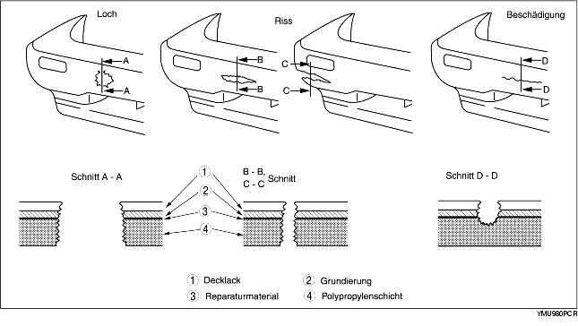
1. Die rauhen Kanten um die beschädigte Stelle herum mit einem Messer glattschneiden. Die beschädigte Stelle mit einer Schleifmaschine soweit abschleifen, dass ein Winkel von ca. 45° entsteht.
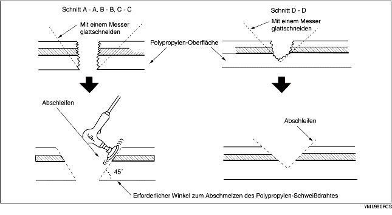
2. Die beschädigte Stelle schweißen.
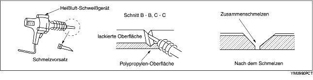
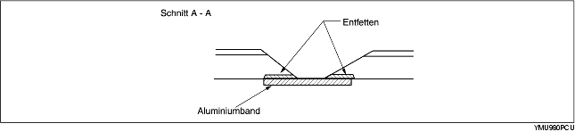
3. Den Polypropylen-Schweißdraht mit einem Heißluft-Schweißgerät an der beschädigten Stelle abschmelzen lassen.
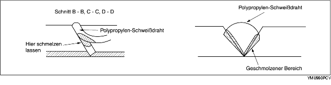
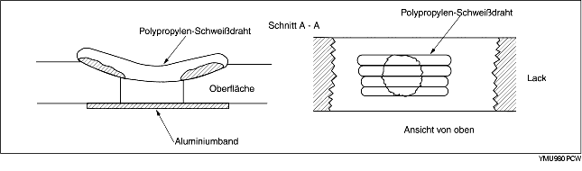
4. Die Polypropylen-Oberfläche schrittweise abschleifen, da das Polypropylen aufgrund der Reibungshitze leicht schmilzt. Die Fläche, auf die das Reparaturmaterial aufgetragen wird, ebenfalls abschleifen.
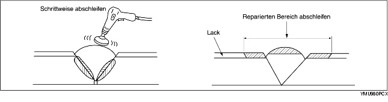
5. Auf eine Fläche, die größer ist als der reparierte Bereich, mit einem Pinsel gleichmäßig Polypropylen-Primer auftragen. Den Primer bei 20°C {68°F} ca. 10 Minuten trocknen lassen.
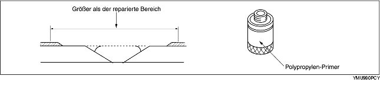
6. Hauptkomponente und Härterkomponente im Verhältnis 1:1 mischen. Das gemischte Reparaturmaterial auf die beschädigte Stelle auftragen.
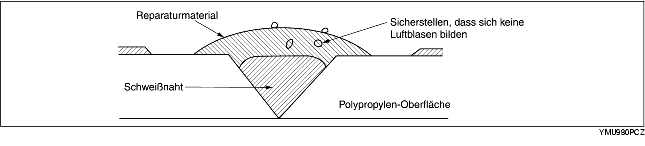
Bei dem Reparaturmaterial handelt es sich um einen Zweikomponenten-Epoxidkleber.
Nach dem Aushärten bildet das Reparaturmaterial eine gute Oberfläche, die ebenso elastisch ist wie die Polypropylen-Oberfläche.
Bei dem Reparaturmaterial für Urethan-Stoßfänger handelt es sich ebenfalls um einen Zweikomponenten-Kleber. Er ist jedoch nicht identisch mit dem Kleber für Polypropylen-Stoßfänger. Bei Verwendung des falschen Reparaturmaterials können keine optimalen Ergebnisse erzielt werden.
7. Die Oberfläche mit Sandpapier (#180-#240) abschleifen.
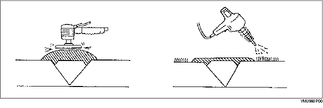
8. Die Oberfläche entfetten.
9. Primer und Härterkomponente im Verhältnis 1:1 mischen. Den Primer aufsprühen oder mit einem Pinsel auf den reparierten Bereich und die Stoßfängeroberfläche auftragen.
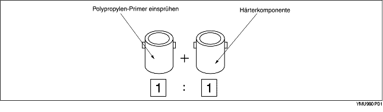
Den Primer innerhalb von 16 Stunden nach dem Mischen auftragen.
10. Die Oberfläche trocknen lassen.
11. Den Urethan-Primer mit Weichmacher mischen und auf den reparierten Bereich aufsprühen.
12. Trocknungszeit bei 20°C {68°F} - mindestens 8 Stunden.
Trockungszeit bei 60°C {140°F} - 1 Stunde
13. Die gesamte Stoßfängeroberfläche mit Sandpapier (#400-#600) leicht abschleifen. Dabei darauf achten, dass die Polypropylen-Oberfläche nicht sichtbar wird. (Es kann trocken oder nass geschliffen werden.)
14. Entfettungsmittel auf die gesamte Stoßfängeroberfläche auftragen. Die Oberfläche schnell mit einem sauberen Tuch abwischen.
15. Passende Karosseriefarbe auf den Stoßfänger aufsprühen.
16. Trocknungszeit bei 20°C {68°F} - mindestens 8 Stunden.
Trockungszeit bei 60°C {140°F} - 1 Stunde